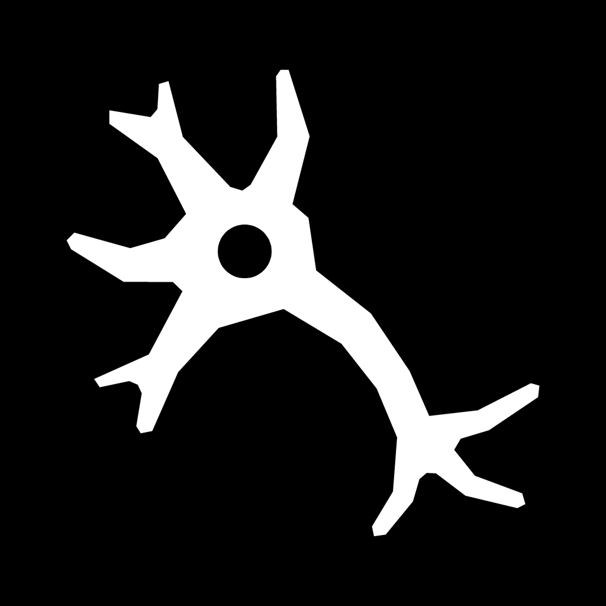
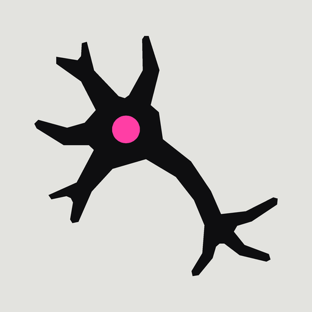

29 pt (Ajustes, Spotlight)
40 pt (notificaciones)
60 pt (inicio)
iOS claro

iOS oscuro

iOS tintado

Android (máscara redonda)
1 · Pantalla de inicio
2 · Solo
3 · Chico
4 · Variantes
Ocultar
Teclas 1 a 4 para cambiar de vista, 0 para ocultar. En la vista 1 contá 5 segundos y ocultá.